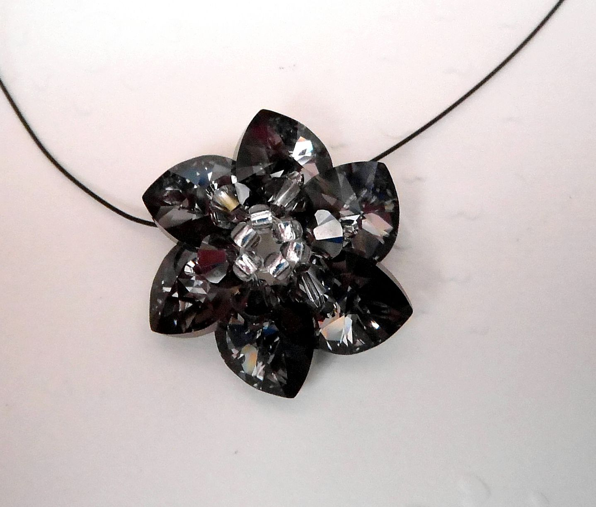

Swarovski
Kytičky na krk
Jedná se o šperk vyrobený šitou technikou. Jsou zde kombinovány skleněné korálky, Swarovski korálky tzv. „sluníčka“ a Swarovski komponenty srdíčka. Vzhledem k velké barevné škále použitého materiálu, je možno vyrobit kytičku v různých barevných kombinacích. Nejvhodnější použití je na náhrdelník, který lze zkombinovat s náušnicemi. Jako závěs náhrdelníku používám lakované lanko, které je tenké a tím nenápadné a nenarušuje krásu kytičky. Lanka se vyrábějí lakovaná, takže je lze sladit s kytičkou. Další použití je na sponky do vlasů, na čelenku do vlasů nebo jen jako přívěsek na tašku.
Andělé pro štěstí
Tyto přívěsky jsou velmi oblíbené. Na jejich zhotovení používám skleněné korálky a kovové komponenty, které poskládám na ketlovací nýtek a zavěsím buď na šňůrku nebo malou karabinku. Nepřeberné množství korálků a kovových komponentů zaručuje originalitu každého andílka. Lze je zavěsit na zipy peněženky, na tašky, na mobil nebo jen tak někam pro radost. Nedoporučuji tyto andílky dávat na klíče – jedná se o skleněné korálky a o kovové klíče by se zničily.
Motýlci
Motýlci jsou vyrobeny kombinací Swarovki komponentů velkých a malých srdíček, Swarovski korálků tzv. „sluníček“ a skleněných korálků rockail. Jedná se o techniku šitého šperku. Vzhledem k velkému barevnému výběru Swarovki komponentů, lze motýlky vyrobit v nepřeberném množství barevných variant. Nejvhodnější použití je na náhrdelník, který lze zkombinovat s náušnicemi. Jako závěs náhrdelníku používám lakované lanko, které je tenké a tím nenápadné a nenarušuje krásu motýlka. Lanka se vyrábějí lakovaná, takže je lze sladit s motýlkem. Další použití je na sponky do vlasů, na čelenku do vlasů nebo jen jako přívěsek na tašku.
Prsteny
Tyto prstýnky vypadají nádherně vzhledem k jejich třpytu. Jsou vyrobeny šitou technikou a jedná se o obšití Swarovski rivolky (což je kamínek bez dírky) Sw. korálky tzv. „sluníčky“ a skleněnými korálky rockal. Návlekový materiál je vlasec. Je to ideální šperk na léto, lze ho zkombinovat s náušnicemi nebo náhrdelníkem ve stejném provedení.